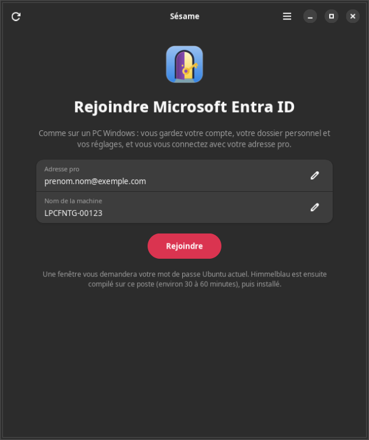

Sésame,
votre compte Microsoft Entra ouvre votre poste Ubuntu, comme sur un PC Windows : votre adresse pro, le nom de la machine, c'est tout.

Sur Ubuntu 24.04 ou plus récent :
curl -fsSL https://mawena.github.io/sesame/installer.sh | sudo shLe script ajoute le dépôt APT signé puis installe le paquet ; les trois commandes qu'il lance sont détaillées plus bas. Lancez ensuite « Sésame » depuis les applications, ou sesame-assistant.
À quoi ça sert
Sur un PC Windows, rejoindre Entra demande une adresse et un mot de passe : rien à créer, rien à chercher. Sésame fait la même chose sur Ubuntu avec Himmelblau, un logiciel libre qui passe par les applications de Microsoft, comme Windows, et retrouve votre organisation à partir du domaine de l'adresse.
Aucune application ni aucun ID à créer dans Entra. Vous donnez votre adresse pro et le nom de la machine ; Sésame sauvegarde, crée un compte de secours, installe Himmelblau et relie votre compte. Votre compte local reste tel quel : même identifiant, même dossier personnel, mêmes groupes, mêmes réglages. Pas de reprise de compte, pas de redémarrage.
Gratuit, sans abonnement. Sésame compile sur votre poste la branche stable stable-4.x de Himmelblau, sous votre compte : c'est la voie gratuite prévue par l'installateur officiel de Himmelblau. Comptez 30 à 60 minutes, environ 6 Go de RAM et 10 Go de disque (podman est installé pour l'occasion). Un assistant graphique fait tout ; la commande sesame rejoindre fait la même chose dans un terminal, et sesame mettre-a-jour recompile quand une nouvelle version stable sort.
Trois moments, dans l'ordre
-
L'assistant
Une page : votre adresse pro et le nom de la machine (prérempli). Un clic sur « Rejoindre » : une fenêtre de mot de passe Ubuntu pour la préparation (sauvegarde, compte de secours, nom de la machine, sortie d'un éventuel domaine Active Directory), puis la compilation de Himmelblau sous votre compte, avec sa progression, puis une seconde fenêtre pour l'installation et la configuration. Chaque étape détecte si elle est déjà faite : on peut tout relancer sans risque.
-
La première connexion
Vous vous déconnectez, vous choisissez votre compte à l'écran d'accueil, vous tapez le mot de passe Entra de votre adresse pro et vous validez sur le téléphone. Le poste est inscrit dans Entra à ce moment-là, comme un PC Windows.
-
Le code PIN
Himmelblau vous fait ensuite choisir un code PIN (Windows Hello) : c'est lui qui sert aux connexions et aux déverrouillages suivants, sans repasser par le téléphone.
On peut toujours revenir
Sésame ne touche à rien sans filet.
Sauvegardes
Avant chaque étape qui modifie quelque chose, la configuration des comptes est copiée dans /var/lib/sesame/sauvegardes. Elles sont gardées, même si vous désinstallez le paquet.
Compte de secours
Un compte administrateur local de dépannage, avec un mot de passe que vous choisissez, ou celui de votre compte actuel. Le mot de passe passe par l'entrée standard et n'est jamais écrit dans un journal.
Retour en arrière
sesame desactiver coupe la connexion Entra sans rien désinstaller : vous vous connectez à nouveau en local seulement. sesame rejoindre rétablit tout.
Installer
Pour Ubuntu Desktop 24.04 ou plus récent (GNOME, GDM). Il faut des droits d'administration sur le poste, environ 10 Go de disque et 6 Go de RAM pour compiler Himmelblau. Une fois le dépôt ajouté, sudo apt upgrade apporte les nouvelles versions.
-
Ajouter la clé qui signe le dépôt :
sudo curl -fsSLo /usr/share/keyrings/sesame.gpg https://mawena.github.io/sesame/apt/sesame.gpg -
Ajouter le dépôt :
sudo curl -fsSLo /etc/apt/sources.list.d/sesame.sources https://mawena.github.io/sesame/apt/sesame.sources -
Installer :
sudo apt update && sudo apt install sesame -
Rejoindre Entra (ou lancez « Sésame » depuis les applications) :
sesame rejoindre
Sans le dépôt : téléchargez le paquet .deb et sa somme de contrôle sur la page de la dernière version, puis sudo apt install ./sesame_*_all.deb.
Code source et documentation Toutes les versions Signaler un problème